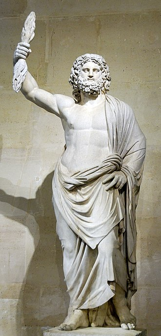
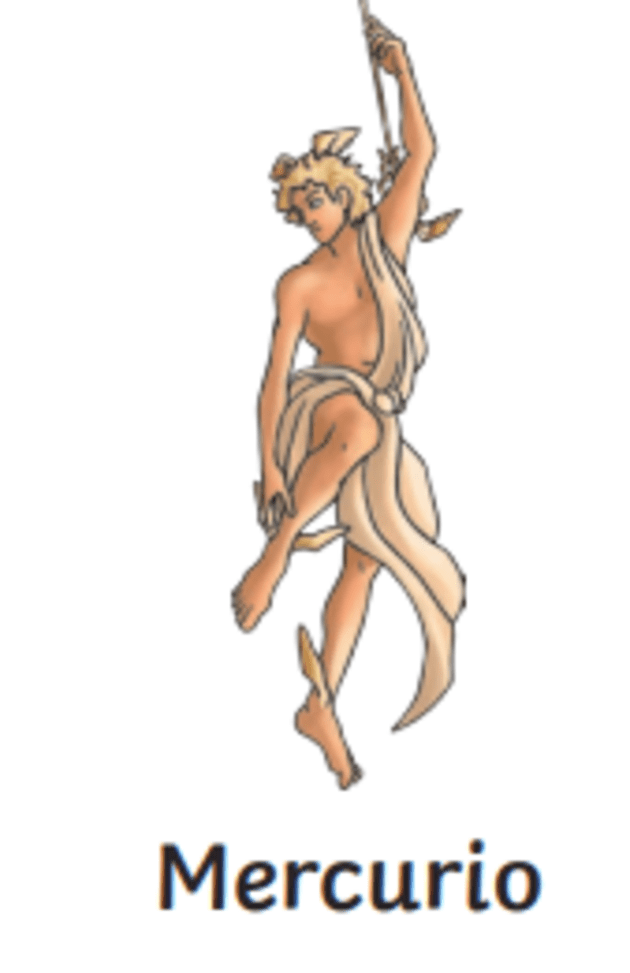

| DIOSES |
DEFINICIÓN |
FOTO |
| DINA |
Es la versión romana de Artemisa. Era la diosa de los animales
salvajes, la caza, la luna, la castidad y el parto. Era la hermana gemela de Apolo y era muy
popular entre los romanos que vivían en las zonas rurales. |
|
| JUNO |
Era la esposa de Júpiter. Se dice que
era la Reina de los Cielos, así como del parto y la fertilidad. El mes de junio deriva del
nombre Juno. |
|
| JUPITER |
Era considerado como el equivalente romano del dios griego, Zeus.
Júpiter era hermano de Neptuno y Plutón. Era el rey de los dioses, también conocido como el dios
del cielo o el gran protector. Controlaba el clima y las fuerzas de la naturaleza, y era
conocido por enviar rayos para advertir a los ciudadanos de Roma. |
 |
| MARTE |
Es la versión romana de Ares. Era el dios de la guerra y el segundo al
mando de Júpiter. Marte fue considerado el padre de Rómulo y Remo, los míticos gemelos creadores
de Roma. |
|
| MERCURIO |
Es el dios de la traducción,interpretación y mensajero de los dioses.
Fue considerado uno de los más inteligentes de todos
los dioses del Olimpo y fue un mensajero para ellos. También gobernó sobre la riqueza, la buena
fortuna y el comercio. |
 |
| MINERVA |
Es el nombre romano de Atenea, más comúnmente conocida como la diosa de
la guerra, sin embargo, también era la diosa del comercio, la industria y la educación. Cuenta
la leyenda que surgió de la cabeza de Júpiter. |
|
| NEPTUNO |
Es el equivalente romano de Poseidón. Era la deidad del mar, aunque más
tarde también se le asoció con los ríos. En el arte, a menudo se le muestra con un tridente y un
delfín |
|
| PLUTÓN |
era el hermano de Júpiter y Neptuno, y dios del Inframundo. Los romanos
creían que el inframundo era el lugar al que iba la gente después de la muerte. |
|
SATURNO |
Fue el primer rey de los dioses, y también era conocido como el dios del
tiempo. Saturno lleva una guadaña, una herramienta que se usa para cortar cultivos. El festival de
Saturno, Saturnalia, se convirtió en uno de los festivales romanos más populares. Cuando Saturno
murió, el mundo se dividió entre sus hijos, Neptuno, Plutón y Júpiter. |
|
VENUS |
Es la diosa del amor, la belleza y
la fertilidad. Según la leyenda, Venus nació de la espuma del mar. Es por eso que en el arte a
menudo se la representa surgiendo de las olas. |
|